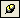
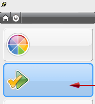
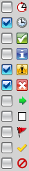

点击资源条上的 HD3D 工具选项卡 。
|
提示 |
保持导航器打开  可能会有所帮助。 |
双击 Check-Mate 以打开 Check-Mate 工具。

在设置组中，清除除了显示最新的对象、显示通过的对象(带警告)以及显示失败的对象之外的全部复选框。

在过滤级别列表中，选择测试。
在设置组中，点击设置测试 。
点击测试选项卡。
在类别列表框中，右击 PMI 节点并选择对类别全选。
点击添加到选定项 以将检查 PMI 形位公差语义有效性以及检查 PMI 形位公差句法有效性添加到选定的测试列表框中。